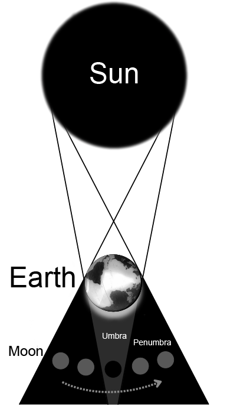
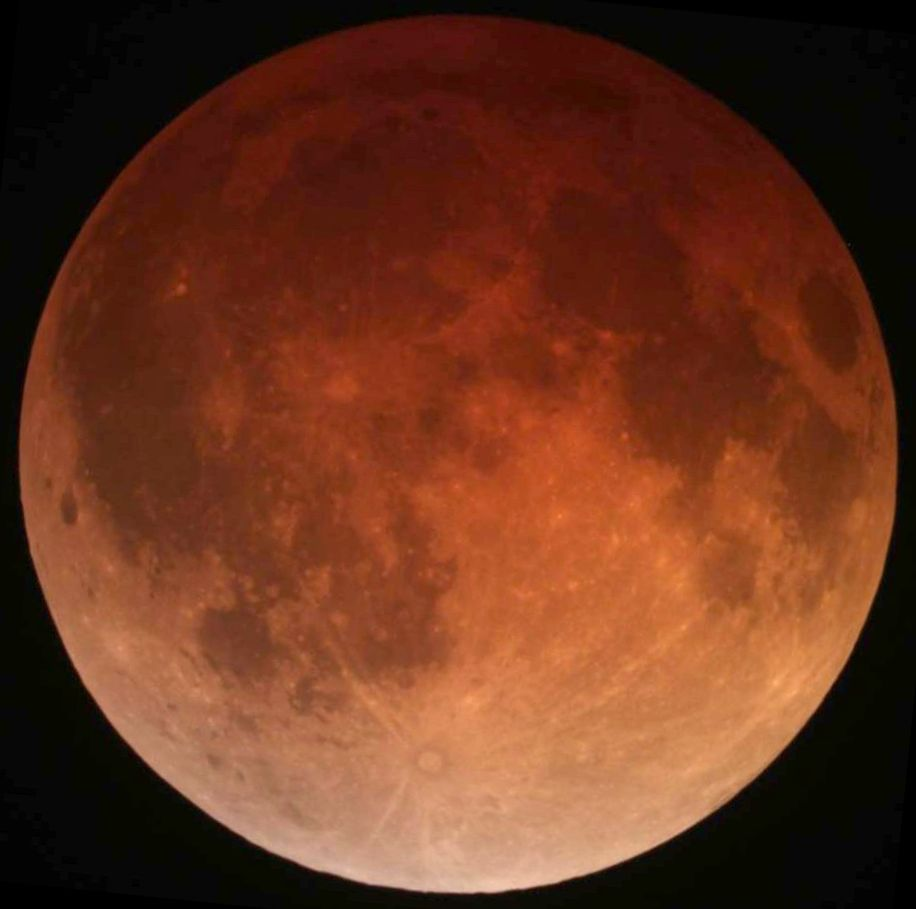

A lunar eclipse occurs when the Moon passes into Earth's shadow, causing it to darken. Unlike a solar eclipse, a lunar eclipse is visible simultaneously from anywhere on the night side of Earth. There are three types — penumbral, partial, and total — depending on which part of Earth's shadow the Moon enters.

Primefac, CC BY-SA 4.0
{kind=link}
Mechanism
A lunar eclipse occurs when Earth lies directly between the Sun and the full Moon, casting its shadow across the lunar surface. Earth projects two distinct shadow zones into space: the umbra (the darkest central cone where direct sunlight is completely blocked) and the penumbra (the outer, partially illuminated zone where only some sunlight is blocked). At the Moon's average distance, Earth's umbral shadow has a diameter of approximately 9,000–9,200 km — roughly 2.6 times the Moon's diameter of 3,476 km.
Lunar eclipses do not occur at every full Moon because the Moon's orbital plane is inclined approximately 5° relative to Earth's orbital plane (the ecliptic). An eclipse can only happen when a full Moon occurs near one of the two orbital nodes — the points where the Moon's orbit crosses the ecliptic — so that Earth, Moon, and Sun are sufficiently aligned.
Types of Lunar Eclipse
Penumbral eclipses occur when the Moon passes through only Earth's penumbra. The dimming of the Moon's surface is subtle — often scarcely noticeable to casual observers — because sunlight is only partially blocked. Approximately 36.3% of all lunar eclipses over a 5,000-year period are penumbral.
Partial eclipses occur when part of the Moon enters the umbra while the remainder stays in the penumbra or direct sunlight. The dark umbral bite taken out of the lunar disk is distinctly visible to the naked eye. Approximately 34.9% of all lunar eclipses are partial.
Total eclipses occur when the entire Moon passes into Earth's umbra. Because sunlight refracted through Earth's atmosphere reaches the Moon indirectly, totality does not produce a completely black Moon; instead, the Moon glows with a characteristic reddish-orange colour that has earned total lunar eclipses the popular name 'blood moon'. Total eclipses represent approximately 28.8% of all lunar eclipses.
Blood Moon Colouring and Rayleigh Scattering
During totality, the Moon is illuminated by a ring of refracted sunlight bent around Earth's limb through Earth's atmosphere. The reddish-orange glow arises from Rayleigh scattering: shorter wavelengths (blue and violet) are scattered out of the light beam by atmospheric molecules and small particles, while longer wavelengths (red and orange) pass through and are refracted into the umbral shadow cone. This is the same physical mechanism responsible for red sunsets and the blue daytime sky. The colour and brightness of the eclipsed Moon vary with atmospheric conditions; volcanic eruptions or high dust loading can deepen the red or make the Moon nearly invisible at mid-totality.

Alfredo Garcia Jr., CC BY-SA 2.0
{kind=link}
The Danjon Scale
French astronomer André Danjon proposed a five-point luminosity scale for rating the appearance of the Moon during total lunar eclipses. At L = 0 the Moon is almost invisible, especially at mid-totality. At L = 1 the eclipse is dark gray or brownish with details distinguishable only with difficulty. At L = 2 the eclipse is deep red or rust-coloured with a very dark central shadow. At L = 3 the eclipse is brick-red, usually with a bright or yellow rim to the umbral shadow. At L = 4 the Moon is very bright copper-red or orange with a bluish, very bright rim. Because volcanic aerosols and water vapour in the stratosphere affect how much blue and green light is filtered out, the Danjon value can serve as an indirect measure of atmospheric transparency.
Duration and Frequency
Totality can last up to approximately 107 minutes; the full event from first to last contact of the Moon's limb with Earth's shadow can span up to 236 minutes. The record duration for totality is 1 hour 42 minutes 57 seconds, achieved during the total lunar eclipse of 27 July 2018. Duration depends on how centrally the Moon passes through the umbra and on the Moon's orbital distance: eclipses near apogee, when the Moon is farther from Earth, take longer to traverse the shadow.
In most calendar years there are two lunar eclipses; in some years there is one, three, or none. The 21st century contains 228 lunar eclipses, averaging 2.28 per year. An observer at a fixed location on Earth can witness 19 or 20 lunar eclipses in any 18-year window, since a lunar eclipse is visible from the entire night hemisphere simultaneously.
The Saros Cycle
The recurrence of lunar eclipses is governed by the Saros cycle, a period of approximately 6,585.3 days (18 years, 11 days, 8 hours). This cycle arises because three distinct lunar orbital periods come into near-perfect alignment after one Saros: 223 synodic months (6,585.3223 days), 239 anomalistic months (6,585.5375 days), and 242 draconic months (6,585.3575 days). After one Saros, the Sun, Moon, and Earth return to nearly the same geometry, so a similar eclipse recurs. A complete Saros series typically spans 1,226 to 1,550 years and contains 69 to 87 eclipses in total.
The word "Saros" derives from a Babylonian term but was not applied to eclipse prediction until English astronomer Edmund Halley adopted it in 1691. Each new eclipse in a Saros series shifts geographically by approximately 120° westward, meaning three Saros periods (an 'Exeligmos' of approximately 54 years and 34 days) are required before an eclipse recurs at nearly the same location on Earth.
Historical Significance
The earliest known written records of lunar eclipses are Babylonian clay tablets dating to around 2300 BCE. By 747 BCE, Babylonian astronomers could predict the timing of lunar eclipses using the Saros cycle, and eclipses were treated as omens for kings and nations. Greek philosophers, including Aristotle in the 4th century BCE, cited the curved shadow Earth casts on the Moon during lunar eclipses as evidence that Earth is spherical.
In 413 BCE, during the Peloponnesian War, Athenian commander Nicias delayed the retreat of his fleet from Syracuse after a lunar eclipse. Interpreting it as an ill omen requiring a further 27-day wait, his hesitation allowed Syracusian forces to counterattack, contributing decisively to the destruction of the Athenian Sicilian Expedition. In 1504, Christopher Columbus — stranded in Jamaica and facing a food embargo — used almanac predictions of the total lunar eclipse of 29 February 1504 to intimidate local leaders into resuming provisions by claiming divine wrath would darken the Moon.